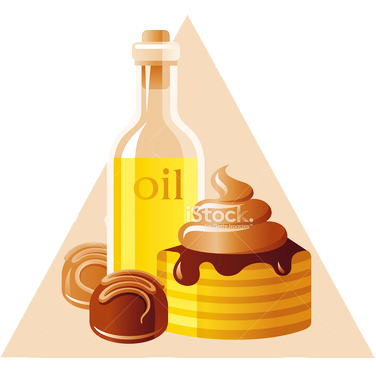
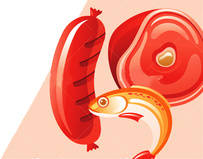
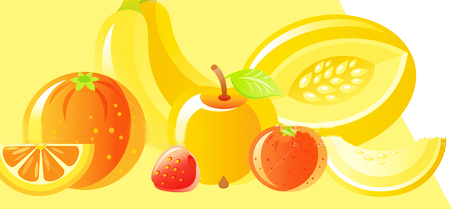
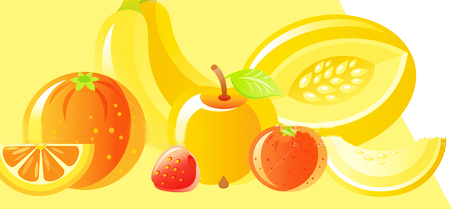

Fats, Oil and Sweets
The small tip of the Pyramid shows fats, oils and sweets.
These are foods such as salad dressings and oils, cream, butter, margarine, sugars, soft drinks, candies, and sweet desserts. These foods provides calories and little else nutritionally. Most people should use them SPARINGLY.
There are NO recommended servings for this group because they are not essential. These foods should be avoided as they are high in fat, including saturated fat, sugar and salt. They may promote obesity, which can lead to heart disease, type 2 diabetes and some cancers.
Start today and limit what you eat from this shelf to no more than 1 serving a day maximum and ideally not everyday. Don’t be tempted to swop eating healthy foods so you can have more of these foods high in fat, sugar and salt. You need healthy foods in the serving sizes recommended to provide all your vitamins and minerals. The examples across are about 100 calories – so check the label when choosing foods high in fat and sugar.
These are about 100 calories:
- about 4 squares of chocolate (half a bar)
- 1 small or fun sized chocolate coated bar
- 1 bag of lower fat crisps
- 1 small cup cake (without icing) or one plain mini muffin
- 1 small slice of fruit brack
- 2 plain biscuits or 1 chocolate biscuit
- about ½ a can of sugary drink
- 1 scoop of vanilla ice-cream
- ½ or 1 cereal bar, check the label for calories
**Alcohol is not essential for health and is not recommended for children under 18 years. 1 glass of beer, lager, wine and spirits contains about 100 - 150 calories.


FATS and CHOLESTEROL

How much fat can I have?
It depends on your calorie needs. The Dietary Guidelines recommends that limit fat in our diets to 30 percent of calories. This amounts to 53 grams of fat in a 1,600 calorie diet, 73 grams offat in a 2,200-calorie diet, and 93 grams of fat in a 2,800- calorie diet. You will get up to half this fat even if you pick the lowest fat choices from each food group and add no fat to your foods in preparation or at the table. You decide how to use the additional fat in your daily diet. You may want to have foods from the five major food groups that are higher in fat—such as whole milk instead of skim milk. Or you may want to use it in cooking or at the table in the form of spreads, dressings, or toppings.
What about choloesterol?
Cholesterol and fat are not the same thing. Cholesterol is a fat-like substance present in all animal foods—meat, poultry, fish, milk and milk products, and eggyolks. Both the lean and fat of meat and the meat and skin of poultry contain cholesterol. In milk products, cholesterol is mostly in the fat, so lower fat products contain less cholesterol. Egg yolks and organ meats, like liver, are high in cholesterol. Plant foods do not contain cholesterol. Dietary cholesterol, as well as saturated fat, raises blood cholesterol levels in many people, increasing their risk for heart disease. Some health authorities recommend that dietary cholesterol be limited to an average of 300mg or less per day.
SUGARS and SALT/SODIUM
What about sugars?
Sugars include white sugar,brown sugar, raw sugar, corn syrup, honey, and molasses; these supply calories and little else nutritionally. To avoid getting too many calories from sugars, try to limit your added sugars to 6 teaspoons a day if you eat about 1,600 calories, 12 teaspoons at 2,200 calories, or 18 teaspoons at 2,800 calories.These amounts are intended to be averages over time. The pattern sare illustrations of healthful proportions in the diet, not rigid prescriptions. Added sugars are in foods like candy and softdrinks, as well as jams, jellies, and sugars you add at the table. Some added sugars are also in foods from the food groups, such as fruit canned in heavy syrup and chocolate milk.
Do I have to give up salt?
No. But most people eat more than they need. Some health authorities say that sodium intake should not be more than 2,400 mg. Nutrition labels also list a Daily Value of 2,400 mg per day for sodium. Much of the sodium in people’s diets comes from salt they add while cooking and atthe table. (One teaspoon of salt provides about 2,000 mg of sodium.) Go easy on salt and foods that are high in sodium, including cured meats, luncheon meats, and many cheeses, most canned soups and vegetables, and soy sauce. Look for lower salt and no-salt-added versions of these products at your supermarket.


 



The Food Guide Pyramid ©
All rights reserved.
2016